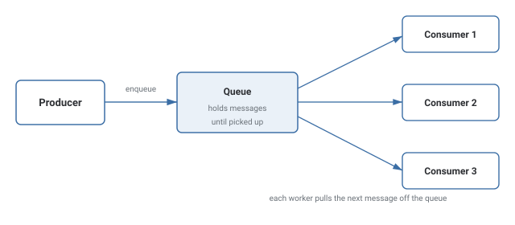
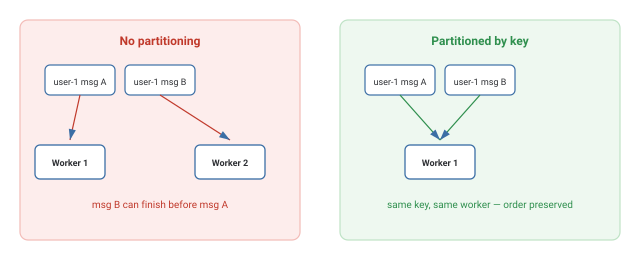

Message Queues
How a producer and consumer stay decoupled — the producer drops work in a queue and moves on, while one or more consumers pull it off at their own pace.
Theory & Diagrams
Why a queue exists
A producer creates work faster than a consumer can process it, or simply doesn't want to wait for the work to finish. A queue sits between them: the producer drops a message in and moves on, and one or more consumers pull messages off at their own pace.
Decoupling producer from consumer
The producer only ever talks to the queue, never the consumer directly. The consumer can be slow, temporarily down, or scaled to many instances — none of that is the producer's problem.

Ordering vs. scaling consumers
Adding consumers increases throughput, but once several workers pull from the same queue, messages are no longer guaranteed to process in the order they were sent. If ordering matters for a given entity, messages for that entity need to be partitioned to the same worker.

Trade-offs
- The caller doesn't need an immediate response and can move on once work is enqueued.
- Work needs to survive a temporarily slow or unavailable consumer.
- The caller genuinely needs an immediate result to proceed (e.g., an auth check).
- Strict, simple ordering across all messages matters more than throughput.
What interviewers are listening for: that a queue trades immediacy for resilience and scalability, and that "add more consumers" isn't free — it specifically risks breaking ordering unless messages are partitioned by key.
Real-World Examples
- RabbitMQ / Amazon SQS — classic message queues used to decouple services, commonly for background job processing (emails, image resizing, report generation).
- Apache Kafka — a distributed log-based streaming platform, often used where many consumers need to independently read the same stream of events.
- Order processing systems — a checkout enqueues an "order placed" message, and separate consumers handle payment, inventory, and shipping without the checkout request waiting on all three.
- Video/image processing pipelines — an upload enqueues a "process this file" message, and a pool of workers does the slow transcoding or resizing asynchronously.
Interview Questions
Click a question to reveal the answer.
Why put a queue between a producer and a consumer instead of calling directly?
A direct call couples the caller to the callee's speed and availability. A queue lets the producer enqueue and move on immediately; a slow or temporarily-down consumer doesn't block the producer.
How does adding more consumers increase throughput?
Each consumer independently pulls the next available message, so more consumers means more messages processed in parallel — until something else (the queue, a downstream resource) becomes the bottleneck.
Why does adding more consumers risk breaking message ordering?
Whichever worker happens to be free next takes the next message — there's no guarantee the same worker handles messages in the order they were produced, especially if processing time varies.
How do you preserve ordering while still scaling consumers?
Partition messages by a key (e.g., user ID) so all messages for the same key always go to the same worker. Different keys still process in parallel across workers, but order is preserved within each key.
What does "at-least-once delivery" mean?
A message is guaranteed to be delivered, but might occasionally be delivered more than once — for example if a worker crashes after processing but before acknowledging. Most systems accept this and make consumers idempotent rather than chasing exactly-once delivery.
Code & Output
A real queue of 20 messages, processed once by a single consumer and once by three concurrent consumers, each taking a genuine 50ms per message. The measured speedup below comes from two real timed runs, not a computed estimate.